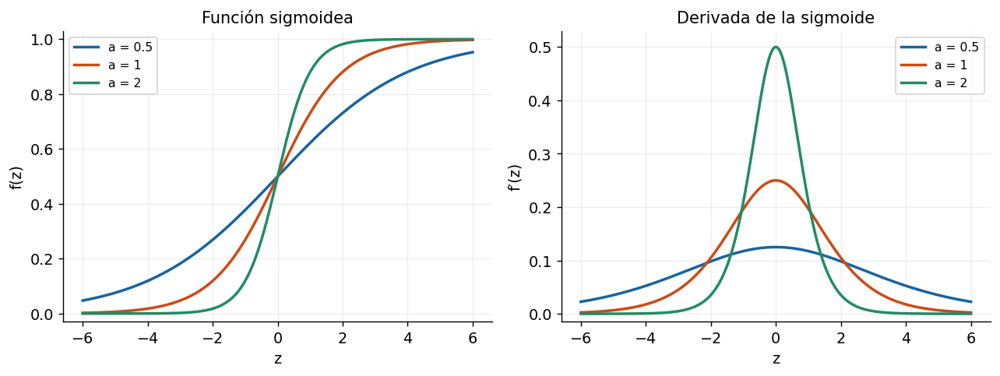
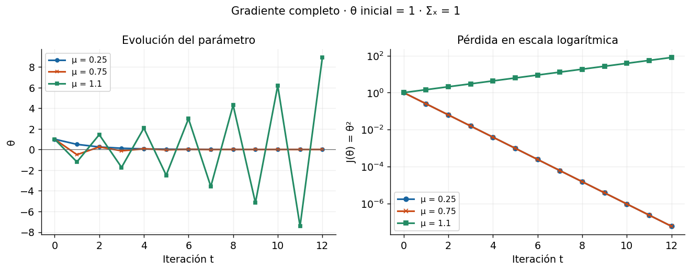
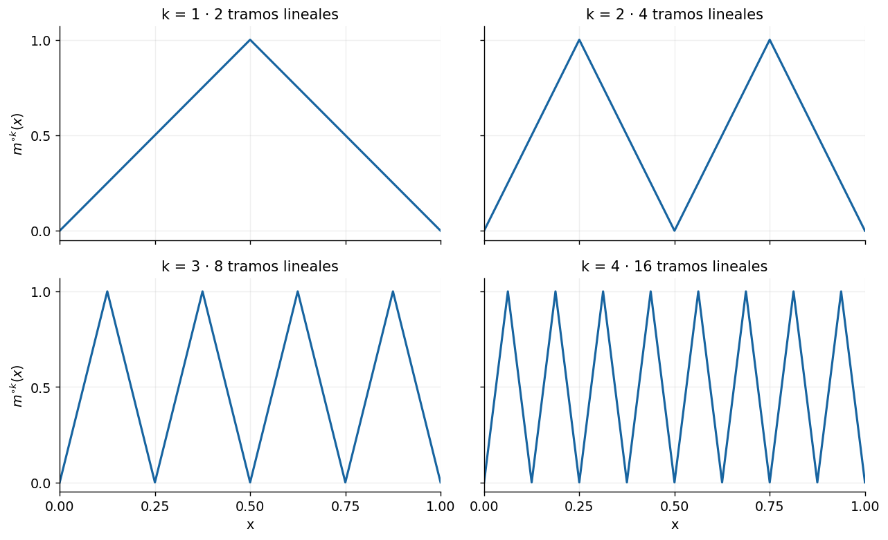

Comprobaciones reproducibles#
Este cuaderno acompaña las demostraciones con cálculos simbólicos, diferencias finitas y ejemplos numéricos. Los valores elegidos son ejemplos didácticos auxiliares; no sustituyen las hipótesis ni las demostraciones analíticas.
Sobre el ejercicio MLP. El documento no incluye la red ni los pesos iniciales a los que se refiere ese ejercicio. Por ello aquí no se presenta una solución numérica inventada. Véase el capítulo de entrenamiento de MLP.
Se puede ejecutar de principio a fin con Python, NumPy, SymPy y Matplotlib. Las figuras se guardan en la carpeta figuras del proyecto.
from pathlib import Path
import sys
import numpy as np
import sympy as sp
import matplotlib
# El script guarda gráficos sin necesitar una ventana. En Jupyter se conserva
# el backend configurado por el cuaderno.
if "__file__" in globals():
matplotlib.use("Agg")
import matplotlib.pyplot as plt
if "__file__" in globals():
RAIZ = Path(__file__).resolve().parents[1]
else:
RAIZ = Path.cwd()
if RAIZ.name == "notebooks":
RAIZ = RAIZ.parent
FIGURAS = RAIZ / "figuras"
FIGURAS.mkdir(parents=True, exist_ok=True)
plt.rcParams.update({
"font.size": 11,
"axes.titlesize": 12,
"axes.labelsize": 11,
"legend.fontsize": 9,
"axes.spines.top": False,
"axes.spines.right": False,
"figure.facecolor": "white",
"savefig.facecolor": "white",
})
COLORES = ["#1764a0", "#cb4b16", "#238b64"]
np.set_printoptions(precision=8, suppress=True)
def guardar_figura(figura, nombre):
"""Guardar la misma figura como PNG y SVG."""
figura.savefig(FIGURAS / f"{nombre}.png", dpi=170, bbox_inches="tight")
figura.savefig(FIGURAS / f"{nombre}.svg", bbox_inches="tight")
print(f"Figura guardada: figuras/{nombre}.png")
def diferencias_centrales(funcion, valores, epsilon=1e-6):
"""Aproximar todas las derivadas parciales de una función escalar."""
valores = np.asarray(valores, dtype=float)
gradiente = np.empty_like(valores)
for indice in np.ndindex(valores.shape):
mas = valores.copy()
menos = valores.copy()
mas[indice] += epsilon
menos[indice] -= epsilon
gradiente[indice] = (
funcion(mas) - funcion(menos)
) / (2.0 * epsilon)
return gradiente
print("Python:", sys.version.split()[0])
print("NumPy:", np.__version__)
print("SymPy:", sp.__version__)
print("Matplotlib:", matplotlib.__version__)
print("Todos los ejemplos usan valores fijados explícitamente.")
Python: 3.12.14
NumPy: 2.3.5
SymPy: 1.14.0
Matplotlib: 3.10.8
Todos los ejemplos usan valores fijados explícitamente.
1. Derivada de la sigmoide#
Para \(f(z)=(1+e^{-az})^{-1}\) verificamos simbólicamente \(f'(z)-af(z)(1-f(z))=0\). La gráfica muestra tres valores positivos de \(a\) y las correspondientes derivadas. La comprobación simbólica trata \(a\) como una constante real.
z, a = sp.symbols("z a", real=True)
f = 1 / (1 + sp.exp(-a * z))
residuo_sigmoide = sp.simplify(sp.diff(f, z) - a * f * (1 - f))
assert residuo_sigmoide == 0
print("f'(z) - a f(z) (1 - f(z)) =", residuo_sigmoide)
print("f(0), con a=1 =", f.subs({z: 0, a: 1}))
print("f'(0), con a=1 =", sp.diff(f, z).subs({z: 0, a: 1}))
z_grafica = np.linspace(-6, 6, 601)
fig, ejes = plt.subplots(1, 2, figsize=(10.4, 4.0))
for a_valor, color in zip((0.5, 1.0, 2.0), COLORES):
f_valores = 1 / (1 + np.exp(-a_valor * z_grafica))
df_valores = a_valor * f_valores * (1 - f_valores)
ejes[0].plot(z_grafica, f_valores, color=color,
label=f"a = {a_valor:g}", linewidth=2)
ejes[1].plot(z_grafica, df_valores, color=color,
label=f"a = {a_valor:g}", linewidth=2)
for eje in ejes:
eje.set_xlabel("z")
eje.grid(alpha=0.2)
eje.legend()
ejes[0].set(title="Función sigmoidea", ylabel="f(z)", ylim=(-0.03, 1.03))
ejes[1].set(title="Derivada de la sigmoide", ylabel="f′(z)", ylim=(-0.015, 0.53))
fig.tight_layout()
guardar_figura(fig, "sigmoide")
plt.show()
plt.close(fig)
f'(z) - a f(z) (1 - f(z)) = 0
f(0), con a=1 = 1/2
f'(0), con a=1 = 1/4
Figura guardada: figuras/sigmoide.png

2. Tamaño de paso con el gradiente completo#
Tomamos \(J(\theta)=\theta^2\), equivalente a \(x=1\), \(y=0\) y \(\Sigma_x=1\), con \(\theta^{(0)}=1\). Como \(\nabla J(\theta)=2\theta\), \(\theta^{(t+1)}=(1-2\mu)\theta^{(t)}\).
La condición de convergencia es \(0<\mu<1\). Comparamos \(\mu=0.25\), \(\mu=0.75\) y \(\mu=1.1\). Los dos primeros pasos generan pérdidas iguales: sus factores son \(0.5\) y \(-0.5\), aunque los parámetros tienen signos diferentes. El tercer caso tiene factor \(-1.2\) y diverge.
pasos = (0.25, 0.75, 1.1)
tiempos = np.arange(13)
trayectorias = {}
for mu in pasos:
theta = np.empty(len(tiempos))
theta[0] = 1.0
for t in range(len(tiempos) - 1):
theta[t + 1] = theta[t] - mu * 2.0 * theta[t]
np.testing.assert_allclose(theta, (1.0 - 2.0 * mu) ** tiempos)
trayectorias[mu] = theta
tendencia = "converge" if abs(1 - 2 * mu) < 1 else "diverge"
print(
f"mu={mu:4.2f} | factor={1-2*mu:5.2f} | "
f"J(theta_12)={theta[-1]**2:.9g} | {tendencia}"
)
assert np.all(np.diff(trayectorias[0.25] ** 2) < 0)
assert np.all(np.diff(trayectorias[0.75] ** 2) < 0)
assert np.all(np.diff(trayectorias[1.1] ** 2) > 0)
print("\nt theta(mu=0.25) theta(mu=0.75) theta(mu=1.1)")
for t in range(7):
print(
f"{t:1d} {trayectorias[0.25][t]:13.6f}"
f" {trayectorias[0.75][t]:13.6f}"
f" {trayectorias[1.1][t]:13.6f}"
)
fig, ejes = plt.subplots(1, 2, figsize=(10.7, 4.2))
for mu, color, marcador in zip(pasos, COLORES, ("o", "x", "s")):
theta = trayectorias[mu]
ejes[0].plot(
tiempos, theta, color=color, marker=marcador, markersize=4,
linewidth=1.8, label=f"μ = {mu:g}"
)
ejes[1].semilogy(
tiempos, theta**2, color=color, marker=marcador,
markersize=5, linewidth=1.8, label=f"μ = {mu:g}"
)
ejes[0].axhline(0, color="#666666", linewidth=0.7)
ejes[0].set(title="Evolución del parámetro", ylabel="θ")
ejes[1].set(title="Pérdida en escala logarítmica", ylabel="J(θ) = θ²")
for eje in ejes:
eje.set_xlabel("Iteración t")
eje.set_xticks(np.arange(0, 13, 2))
eje.grid(alpha=0.2)
eje.legend()
fig.suptitle("Gradiente completo · θ inicial = 1 · Σₓ = 1", fontsize=12)
fig.tight_layout()
guardar_figura(fig, "paso_gradiente")
plt.show()
plt.close(fig)
mu=0.25 | factor= 0.50 | J(theta_12)=5.96046448e-08 | converge
mu=0.75 | factor=-0.50 | J(theta_12)=5.96046448e-08 | converge
mu=1.10 | factor=-1.20 | J(theta_12)=79.4968472 | diverge
t theta(mu=0.25) theta(mu=0.75) theta(mu=1.1)
0 1.000000 1.000000 1.000000
1 0.500000 -0.500000 -1.200000
2 0.250000 0.250000 1.440000
3 0.125000 -0.125000 -1.728000
4 0.062500 0.062500 2.073600
5 0.031250 -0.031250 -2.488320
6 0.015625 0.015625 2.985984
Figura guardada: figuras/paso_gradiente.png

3. Gradientes de una capa convolucional#
Usamos el ejemplo del capítulo: entrada \(3\times3\), filtro \(2\times2\), stride \(1\), sin padding y sesgo \(b=1\). La función escalar auxiliar es \(\mathcal L=\sum_{i,j}O(i,j)\), por lo que \(\delta(i,j)=1\).
Las diferencias centrales evalúan la función de salida al perturbar cada uno de los 14 valores: 9 de la entrada, 4 del filtro y el sesgo. Su comparación con el gradiente analítico comprueba también los índices y las contribuciones acumuladas en las posiciones compartidas.
I = np.arange(1, 10, dtype=float).reshape(3, 3)
h = np.array([[1.0, 0.0], [0.0, -1.0]])
b = 1.0
def salida_convolucional(entrada, filtro, sesgo):
alto, ancho = entrada.shape
alto_filtro, ancho_filtro = filtro.shape
salida = np.empty((alto - alto_filtro + 1, ancho - ancho_filtro + 1))
for i in range(salida.shape[0]):
for j in range(salida.shape[1]):
parche = entrada[i:i + alto_filtro, j:j + ancho_filtro]
salida[i, j] = np.sum(parche * filtro) + sesgo
return salida
O = salida_convolucional(I, h, b)
delta = np.ones_like(O)
grad_h = np.zeros_like(h)
grad_I = np.zeros_like(I)
for i in range(O.shape[0]):
for j in range(O.shape[1]):
grad_h += delta[i, j] * I[i:i + h.shape[0], j:j + h.shape[1]]
grad_I[i:i + h.shape[0], j:j + h.shape[1]] += delta[i, j] * h
grad_b = delta.sum()
grad_h_fd = diferencias_centrales(
lambda filtro: salida_convolucional(I, filtro, b).sum(), h
)
grad_I_fd = diferencias_centrales(
lambda entrada: salida_convolucional(entrada, h, b).sum(), I
)
epsilon = 1e-6
grad_b_fd = (
salida_convolucional(I, h, b + epsilon).sum()
- salida_convolucional(I, h, b - epsilon).sum()
) / (2 * epsilon)
np.testing.assert_allclose(grad_h, [[12, 16], [24, 28]])
np.testing.assert_allclose(
grad_I, [[1, 1, 0], [1, 0, -1], [0, -1, -1]]
)
for analitico, numerico in (
(grad_h, grad_h_fd), (grad_I, grad_I_fd), (grad_b, grad_b_fd)
):
np.testing.assert_allclose(analitico, numerico, atol=1e-7, rtol=1e-7)
print("Salida O:\n", O)
print("Gradiente respecto al filtro:\n", grad_h)
print("Gradiente respecto a la entrada:\n", grad_I)
print("Gradiente respecto al sesgo:", grad_b)
print("Error máximo, filtro:", np.max(np.abs(grad_h - grad_h_fd)))
print("Error máximo, entrada:", np.max(np.abs(grad_I - grad_I_fd)))
print("Error absoluto, sesgo:", abs(grad_b - grad_b_fd))
print("Comprobación satisfactoria de 14 derivadas parciales.")
Salida O:
[[-3. -3.]
[-3. -3.]]
Gradiente respecto al filtro:
[[12. 16.]
[24. 28.]]
Gradiente respecto a la entrada:
[[ 1. 1. 0.]
[ 1. 0. -1.]
[ 0. -1. -1.]]
Gradiente respecto al sesgo: 4.0
Error máximo, filtro: 1.415287442796398e-09
Error máximo, entrada: 1.0279563866788521e-09
Error absoluto, sesgo: 5.591118679149076e-10
Comprobación satisfactoria de 14 derivadas parciales.
4. Retropropagación en una red de dos capas#
Para comprobar una composición no lineal y las transpuestas, consideramos \(a_1=\tanh(W_1x+b_1)\), \(a_2=W_2a_1+b_2\) y \(\mathcal L=\frac12\|a_2-y\|^2\). Las dimensiones son \(x\in\mathbb R^3\), \(a_1\in\mathbb R^2\) y \(a_2\in\mathbb R\).
Esta es una comprobación auxiliar distinta del ejercicio MLP pendiente. La derivada de tanh es \(1-\tanh^2\), y las reglas hacia atrás son \(\delta_2=a_2-y\) y \(\delta_1=(W_2^T\delta_2)\odot(1-a_1^2)\).
Se comparan los gradientes de todos los parámetros y de la entrada con diferencias centrales de la pérdida: 14 derivadas parciales en total.
datos_red = {
"x": np.array([0.7, -1.2, 0.3]),
"W1": np.array([[0.2, -0.4, 0.1], [-0.3, 0.5, 0.2]]),
"b1": np.array([0.1, -0.2]),
"W2": np.array([[0.6, -0.7]]),
"b2": np.array([0.05]),
}
y = np.array([0.4])
def adelante_red(datos):
a1 = np.tanh(datos["W1"] @ datos["x"] + datos["b1"])
a2 = datos["W2"] @ a1 + datos["b2"]
perdida = 0.5 * np.sum((a2 - y) ** 2)
return float(perdida), a1, a2
perdida_red, a1, a2 = adelante_red(datos_red)
delta2 = a2 - y
delta1 = (datos_red["W2"].T @ delta2) * (1 - a1**2)
gradientes_red = {
"W2": np.outer(delta2, a1),
"b2": delta2.copy(),
"W1": np.outer(delta1, datos_red["x"]),
"b1": delta1.copy(),
"x": datos_red["W1"].T @ delta1,
}
def perdida_perturbada(nombre, valores):
datos = {clave: valor.copy() for clave, valor in datos_red.items()}
datos[nombre] = valores
return adelante_red(datos)[0]
print("a1 =", a1)
print("a2 =", a2)
print("Pérdida =", perdida_red)
print("\nVariable Número de componentes Error absoluto máximo")
total_componentes = 0
for nombre in ("W1", "b1", "W2", "b2", "x"):
numerico = diferencias_centrales(
lambda valores, nombre=nombre: perdida_perturbada(nombre, valores),
datos_red[nombre],
)
analitico = gradientes_red[nombre]
np.testing.assert_allclose(analitico, numerico, atol=1e-7, rtol=1e-6)
error = np.max(np.abs(analitico - numerico))
total_componentes += analitico.size
print(f"{nombre:6s} {analitico.size:21d} {error:.3e}")
print(f"Comprobación satisfactoria de {total_componentes} derivadas parciales.")
a1 = [ 0.63514895 -0.73978305]
a2 = [0.94893751]
Pérdida = 0.15066619347363952
Variable Número de componentes Error absoluto máximo
W1 6 2.751e-11
b1 2 1.859e-11
W2 2 1.199e-11
b2 1 1.329e-11
x 3 3.516e-11
Comprobación satisfactoria de 14 derivadas parciales.
5. Campo receptivo por enumeración#
Comprobamos \(r_L=1+\sum_{k=1}^{L}(m_k-1)\prod_{j=1}^{k-1}s_j\) para \(m=(3,3,3)\) y \(s=(1,2,1)\). La enumeración utiliza índices desde cero, como Python. Este cambio de origen no modifica la extensión entre la primera posición y la última.
Además, un ejemplo con \(m=(1,2)\) y \(s=(2,1)\) muestra por qué la extensión del campo receptivo puede incluir huecos.
def posiciones_entrada(posicion, capa, filtros, strides):
if capa == 0:
return {posicion}
posiciones = set()
for desplazamiento in range(filtros[capa - 1]):
anterior = posicion * strides[capa - 1] + desplazamiento
posiciones.update(
posiciones_entrada(anterior, capa - 1, filtros, strides)
)
return posiciones
def formula_campo_receptivo(filtros, strides):
return int(1 + sum(
(filtros[k] - 1) * np.prod(strides[:k], dtype=int)
for k in range(len(filtros))
))
filtros = (3, 3, 3)
strides = (1, 2, 1)
print("Capa Fórmula Extensión enumerada Posiciones utilizadas")
for capa in range(1, 4):
posiciones = posiciones_entrada(0, capa, filtros, strides)
extension = max(posiciones) - min(posiciones) + 1
formula = formula_campo_receptivo(filtros[:capa], strides[:capa])
assert extension == formula
print(f"{capa:4d} {formula:9d} {extension:21d} {sorted(posiciones)}")
assert formula_campo_receptivo(filtros, strides) == 9
assert posiciones_entrada(0, 3, filtros, strides) == set(range(9))
con_huecos = posiciones_entrada(0, 2, (1, 2), (2, 1))
extension_con_huecos = max(con_huecos) - min(con_huecos) + 1
assert con_huecos == {0, 2}
assert extension_con_huecos == formula_campo_receptivo((1, 2), (2, 1)) == 3
print("\nCaso con huecos:", sorted(con_huecos))
print("Extensión:", extension_con_huecos, "| posiciones usadas:", len(con_huecos))
Capa Fórmula Extensión enumerada Posiciones utilizadas
1 3 3 [0, 1, 2]
2 5 5 [0, 1, 2, 3, 4]
3 9 9 [0, 1, 2, 3, 4, 5, 6, 7, 8]
Caso con huecos: [0, 2]
Extensión: 3 | posiciones usadas: 2
6. Beneficio de la profundidad#
Comparamos dos implementaciones de \(m^{\circ k}\) para \(k=1,\ldots,6\): la composición directa de la función tienda y la red explícita de \(k\) capas ocultas de ancho 2. La salida de la red es lineal.
La malla contiene todos los puntos de quiebre diádicos de estos casos. Contamos los tramos a partir de los cambios de pendiente en la malla. Esta comprobación numérica acompaña la prueba de que el número exacto de tramos es \(2^k\); la demostración del capítulo establece el resultado para todos los enteros \(k\geq1\).
def tienda(x):
x = np.asarray(x, dtype=float)
return 2 * np.maximum(x, 0) - 4 * np.maximum(x - 0.5, 0)
def composicion_tienda(x, k):
resultado = np.asarray(x, dtype=float).copy()
for _ in range(k):
resultado = tienda(resultado)
return resultado
def red_ancho_dos(x, k):
if k < 1:
raise ValueError("k debe ser un entero positivo.")
x = np.asarray(x, dtype=float)
h = np.vstack((np.maximum(x, 0), np.maximum(x - 0.5, 0)))
pesos = np.array([[2.0, -4.0], [2.0, -4.0]])
sesgos = np.array([[0.0], [-0.5]])
for _ in range(1, k):
h = np.maximum(pesos @ h + sesgos, 0)
return np.array([2.0, -4.0]) @ h
x_malla = np.linspace(0, 1, 4097)
print("k Capas Ancho Tramos medidos 2^k Error máximo")
for k in range(1, 7):
por_composicion = composicion_tienda(x_malla, k)
por_red = red_ancho_dos(x_malla, k)
np.testing.assert_allclose(por_composicion, por_red, atol=1e-12, rtol=0)
pendientes = np.diff(por_composicion) / np.diff(x_malla)
tramos = 1 + np.count_nonzero(
~np.isclose(pendientes[1:], pendientes[:-1], atol=1e-10, rtol=0)
)
assert tramos == 2**k
error = np.max(np.abs(por_composicion - por_red))
print(f"{k:1d} {k:7d} {2:7d} {tramos:16d} {2**k:5d} {error:.3e}")
fig, ejes = plt.subplots(2, 2, figsize=(10.4, 6.4), sharex=True, sharey=True)
for k, eje in enumerate(ejes.flat, start=1):
eje.plot(
x_malla, composicion_tienda(x_malla, k),
color=COLORES[0], linewidth=1.8
)
eje.set_title(f"k = {k} · {2**k} tramos lineales")
eje.set_xlim(0, 1)
eje.set_ylim(-0.05, 1.07)
eje.set_xticks([0, 0.25, 0.5, 0.75, 1])
eje.set_yticks([0, 0.5, 1])
eje.grid(alpha=0.2)
for eje in ejes[1, :]:
eje.set_xlabel("x")
for eje in ejes[:, 0]:
eje.set_ylabel(r"$m^{\circ k}(x)$")
fig.tight_layout()
guardar_figura(fig, "profundidad")
plt.show()
plt.close(fig)
print("\nTodas las comprobaciones finalizaron sin errores.")
k Capas Ancho Tramos medidos 2^k Error máximo
1 1 2 2 2 0.000e+00
2 2 2 4 4 0.000e+00
3 3 2 8 8 0.000e+00
4 4 2 16 16 0.000e+00
5 5 2 32 32 0.000e+00
6 6 2 64 64 0.000e+00
Figura guardada: figuras/profundidad.png

Todas las comprobaciones finalizaron sin errores.